Heirarchical / Mixed Effects
Tutorial
Bruce Campbell
25 July, 2019
count-regression-hierarchical-mixedeffects-vignette.RmdLinear Mixed Effects
Mixed-effects or mixed models have covariates with both fixed and random effects. The values for at least one set of effects (intercepts and/or slopes) to come from a normal distribution.This is what the random-effects assumption means. A close examination of how such a dataset can be simulated will help us better understand how real datasets are estimated down using mixed models. Very few strategies can be more effective to understand this type of mixed model than the combination of simulating data sets and describing the models fitted.
Model Types
- random intercepts only
- independent random intercepts and slopes
- correlated random intercepts and slopes
- modeling 2 correlated random effects with a scaled Inverse Wishart instead
- general correlated random effects with a scaled Inverse Wishart
n_subjects <- 56 # Number of subjects
n_sample <- 10 # Number of observations for each subject
n_obs <- n_subjects * n_sample # Total number of data points
subjects <- gl(n = n_subjects, k = n_sample) # Indicator for subjects
# Continuous predictor x
original_x <- runif(n_obs, 45, 70)
# standardize it
mean_orig_x <- mean(original_x)
sd_orig_x <- sd(original_x)
x <- (original_x - mean_orig_x)/sd_orig_x
summary(x) Min. 1st Qu. Median Mean 3rd Qu. Max.
-1.691459 -0.901603 -0.008436 0.000000 0.886670 1.713497 hist(x, col = "lightsteelblue1", border = "white", breaks = 10, freq = FALSE)
lines(density(x), col = "lightsteelblue3", lwd = 2)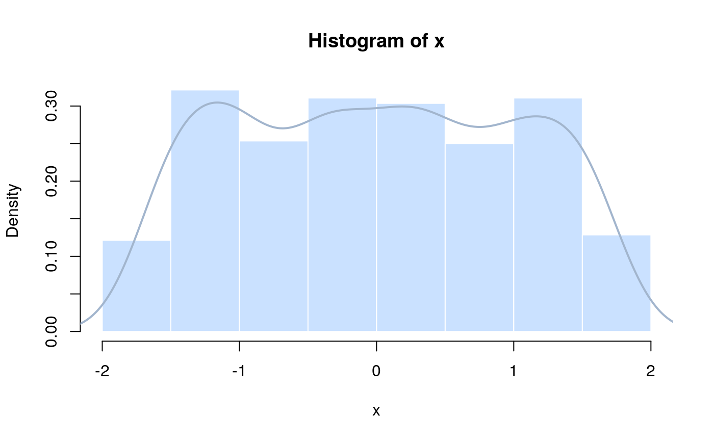
# This is the model matrix for the means parametrization of the interaction
# model between the subjects and the continuous covariate x
Xmat <- model.matrix(~subjects * x - 1 - x)Parameters for the distributions of the random coefficients / random effects (note that the intercepts and slopes comes from two independent Gaussian distributions)
intercept_mean <- 230 # mu_alpha
intercept_sd <- 20 # sigma_alpha
slope_mean <- 60 # mu_beta
slope_sd <- 30 # sigma_beta
# Generate the random coefficients:
intercept_effects <- rnorm(n = n_subjects, mean = intercept_mean, sd = intercept_sd)
slope_effects <- rnorm(n = n_subjects, mean = slope_mean, sd = slope_sd)
par(mfrow = c(1, 2))
hist(intercept_effects, col = "lightsteelblue1", border = "white", breaks = 10,
freq = FALSE)
lines(density(intercept_effects), col = "lightsteelblue3", lwd = 2)
hist(slope_effects, col = "lightsteelblue1", border = "white", breaks = 10,
freq = FALSE)
lines(density(slope_effects), col = "lightsteelblue3", lwd = 2)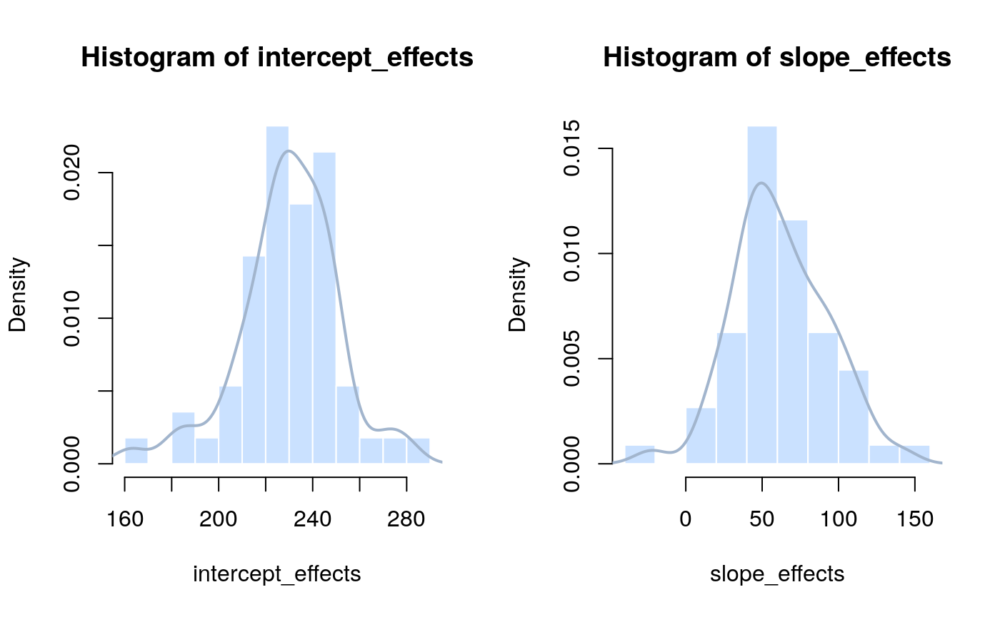
par(mfrow = c(1, 1))
all_effects <- c(intercept_effects, slope_effects) # Put them all together
# Generating the continuous response variable:
lin_pred <- Xmat %*% all_effects # Value of lin_predictor
str(lin_pred) num [1:560, 1] 269 264 242 257 215 ...
- attr(*, "dimnames")=List of 2
..$ : chr [1:560] "1" "2" "3" "4" ...
..$ : NULL# -- the stochastic part
sigma_res <- 30
normal_error <- rnorm(n = n_obs, mean = 0, sd = sigma_res) # residuals
y <- lin_pred + normal_error
# alternatively y <- rnorm(n = n_obs, mean = lin_pred, sd = sigma_res)
# We take a look at the response variable
hist(y, col = "lightsteelblue1", border = "white", breaks = 30, freq = FALSE)
lines(density(y), col = "lightsteelblue3", lwd = 2)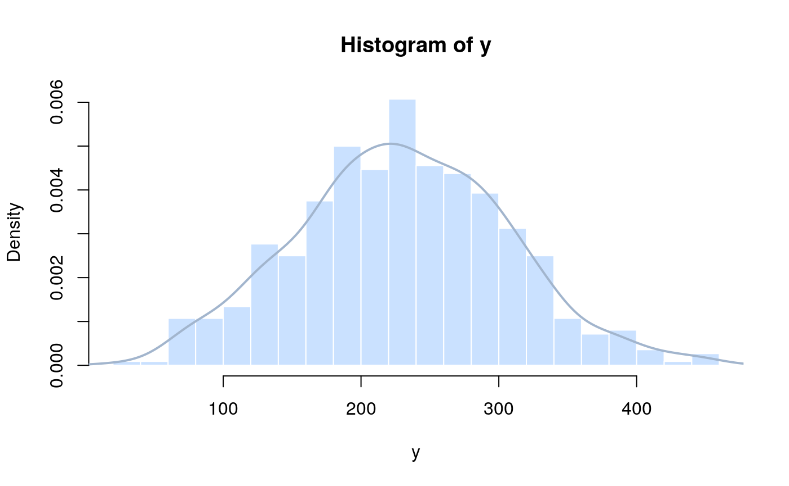
V1
Min. : 24.17
1st Qu.:178.83
Median :227.98
Mean :230.09
3rd Qu.:282.03
Max. :451.27 
REML analysis using R lme4
Linear mixed model fit by REML ['lmerMod']
Formula: y ~ x + (1 | subjects)
REML criterion at convergence: 5836.374
Random effects:
Groups Name Std.Dev.
subjects (Intercept) 21.95
Residual 41.86
Number of obs: 560, groups: subjects, 56
Fixed Effects:
(Intercept) x
230.1 59.3 (Intercept) x
230.08675 59.30436 $subjects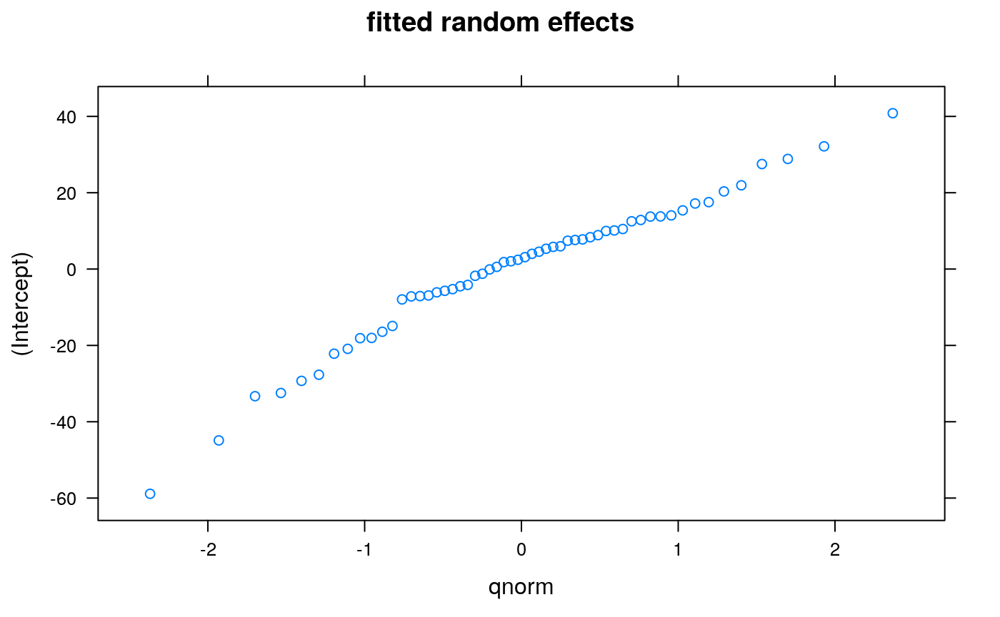
coef.re <- coef(lme_fit1)
plot(coef.re[[1]][, 1], coef.re[[1]][, 2], main = "Coefficients ", ylab = "(Intercept)",
xlab = "x")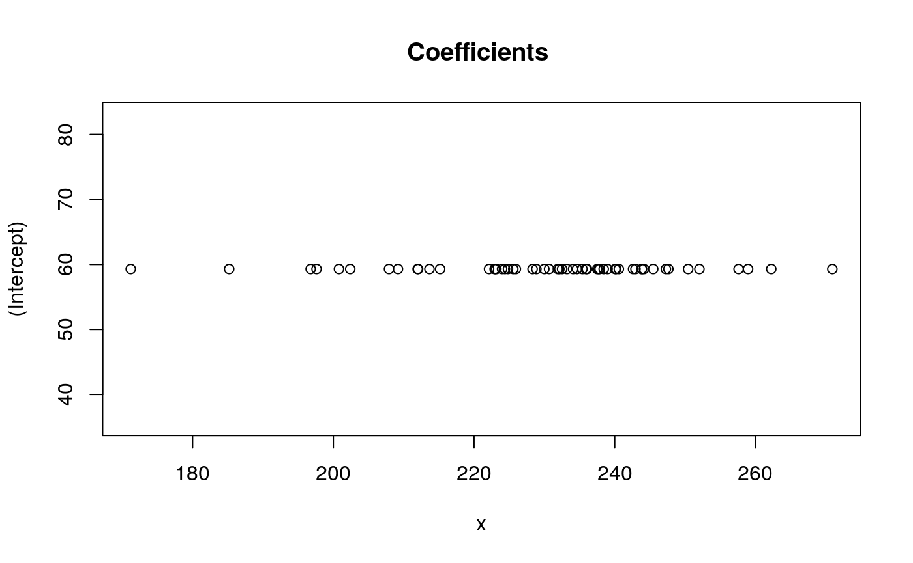
# Compare with true values:
data.frame(intercept_mean = intercept_mean, slope_mean = slope_mean, intercept_sd = intercept_sd,
slope_sd = slope_sd, sigma_res = sigma_res) intercept_mean slope_mean intercept_sd slope_sd sigma_res
1 230 60 20 30 30Linear mixed model fit by REML ['lmerMod']
Formula: y ~ x + (1 | subjects)
REML criterion at convergence: 5836.374
Random effects:
Groups Name Std.Dev.
subjects (Intercept) 21.95
Residual 41.86
Number of obs: 560, groups: subjects, 56
Fixed Effects:
(Intercept) x
230.1 59.3 Bayesian hierarchical analysis using JAGS
# Write model
cat("model {
# Priors
mu_int~dnorm(0, 0.0001) # Mean hyperparameter for random intercepts
sigma_int~dunif(0, 100) # SD hyperparameter for random intercepts
tau_int <- 1/(sigma_int*sigma_int)
for (i in 1:n_subj) {
alpha[i]~dnorm(mu_int, tau_int) # Random intercepts
}
beta~dnorm(0, 0.0001) # Common slope
sigma_res~dunif(0, 100) # Residual standard deviation
tau_res <- 1/(sigma_res*sigma_res)
# Likelihood
for (i in 1:n_obs) {
mu[i] <- alpha[subjects[i]]+beta*x[i] # Expectation
y[i]~dnorm(mu[i], tau_res) # The actual (random) responses
}
}",
fill = TRUE, file = "lme_model1.txt")
jags_data <- list(y = as.numeric(y), subjects = as.numeric(subjects), x = as.numeric(x),
n_subj = max(as.numeric(subjects)), n_obs = as.numeric(n_obs))
# use as.numeric across the board for the data passed to JAGS; it might work
# w/o it, but this is often needed for other BUGS packages
# Inits function
inits <- function() {
list(alpha = rnorm(n_subjects, 0, 2), beta = rnorm(1, 1, 1), mu_int = rnorm(1,
0, 1), sigma_int = rlnorm(1), sigma_res = rlnorm(1))
}
# Parameters to estimate
params <- c("alpha", "beta", "mu_int", "sigma_int", "sigma_res")
# MCMC settings
ni <- 11000
nb <- 1000
nt <- 20
nc <- 3
# Start Gibbs sampling
library("R2jags")
outj <- jags(jags_data, inits = inits, parameters.to.save = params, model.file = "lme_model1.txt",
n.thin = nt, n.chains = nc, n.burnin = nb, n.iter = ni)Compiling model graph
Resolving undeclared variables
Allocating nodes
Graph information:
Observed stochastic nodes: 560
Unobserved stochastic nodes: 60
Total graph size: 2870
Initializing modelout <- outj$BUGSoutput
# Compare with MLEs and true values
data.frame(intercept_mean = intercept_mean, slope_mean = slope_mean, intercept_sd = intercept_sd,
slope_sd = slope_sd, sigma_res = sigma_res) intercept_mean slope_mean intercept_sd slope_sd sigma_res
1 230 60 20 30 30$alpha
[1] 232.0 240.1 215.1 258.1 202.0 235.5 238.0 250.5 196.3 247.0 234.5
[12] 244.0 237.9 171.0 208.8 236.1 233.5 233.2 239.0 271.2 237.9 223.2
[23] 242.7 213.6 228.6 222.3 245.7 223.8 228.1 207.8 230.3 231.9 232.3
[34] 230.3 242.6 225.8 258.9 197.1 200.2 239.7 244.0 223.9 237.6 225.1
[45] 235.8 244.2 184.9 252.4 240.2 247.5 211.9 262.0 225.4 222.6 222.8
[56] 211.8
$beta
[1] 59.28
$deviance
[1] 5773
$mu_int
[1] 229.6
$sigma_int
[1] 22.57
$sigma_res
[1] 41.99Linear mixed model fit by REML ['lmerMod']
Formula: y ~ x + (1 | subjects)
REML criterion at convergence: 5836.374
Random effects:
Groups Name Std.Dev.
subjects (Intercept) 21.95
Residual 41.86
Number of obs: 560, groups: subjects, 56
Fixed Effects:
(Intercept) x
230.1 59.3 The same model can be parametrized by making the mean of the intercept ranefs a fixed effect and modeling the subject ranefs as coming from a normal distribution centered at 0. This is in fact how the lmer function models ranefs.
cat("model {
# Priors
sigma_int~dunif(0, 100) # SD hyperparameter for random intercepts
tau_int <- 1/(sigma_int*sigma_int)
for (i in 1:n_subj) {
alpha[i]~dnorm(0, tau_int) # Random by-subject deflections to the intercept
}
mu_int~dnorm(0, 0.0001) # The mean intercept
beta~dnorm(0, 0.0001) # Common slope
sigma_res~dunif(0, 100) # Residual standard deviation
tau_res <- 1/(sigma_res*sigma_res)
# Likelihood
for (i in 1:n_obs) {
mu[i] <- mu_int + alpha[subjects[i]] + beta*x[i] # Expectation
y[i]~dnorm(mu[i], tau_res) # The actual (random) responses
}
}",
fill = TRUE, file = "lme_model1_1.txt")
# Bundle data
jags_data <- list(y = as.numeric(y), subjects = as.numeric(subjects), x = as.numeric(x),
n_subj = max(as.numeric(subjects)), n_obs = as.numeric(n_obs))
# use as.numeric across the board for the data passed to JAGS; it might work
# w/o it, but this is often needed for other BUGS packages
# Inits function
inits <- function() {
list(alpha = rnorm(n_subjects, 0, 2), beta = rnorm(1, 1, 1), mu_int = rnorm(1,
0, 1), sigma_int = rlnorm(1), sigma_res = rlnorm(1))
}
# Parameters to estimate
params <- c("alpha", "beta", "mu_int", "sigma_int", "sigma_res")
# MCMC settings
ni <- 11000
nb <- 1000
nt <- 20
nc <- 3
# Start Gibbs sampling
library("R2jags")
outj <- jags(jags_data, inits = inits, parameters.to.save = params, model.file = "lme_model1_1.txt",
n.thin = nt, n.chains = nc, n.burnin = nb, n.iter = ni)Compiling model graph
Resolving undeclared variables
Allocating nodes
Graph information:
Observed stochastic nodes: 560
Unobserved stochastic nodes: 60
Total graph size: 2870
Initializing modelout <- outj$BUGSoutput
# Compare with MLEs and true values
data.frame(intercept_mean = intercept_mean, slope_mean = slope_mean, intercept_sd = intercept_sd,
slope_sd = slope_sd, sigma_res = sigma_res) intercept_mean slope_mean intercept_sd slope_sd sigma_res
1 230 60 20 30 30$alpha
[1] 2.2709 10.4368 -14.4434 27.8782 -27.4859 5.3887 9.0278
[8] 21.3908 -33.4256 17.3239 4.7955 14.8499 7.4673 -58.6489
[15] -20.2960 5.8081 4.6564 2.8908 9.1343 41.5510 7.6757
[22] -6.5620 12.8640 -16.8832 -1.3224 -7.6882 16.2645 -5.4239
[29] -1.2459 -22.7099 0.7536 1.6020 2.5525 -0.1043 13.5993
[36] -3.9203 29.4117 -32.5306 -29.0485 10.3896 14.2691 -5.8094
[43] 7.8443 -4.8366 6.2860 14.0609 -45.2007 22.5492 10.7770
[50] 18.1091 -17.9084 32.8588 -4.5668 -7.0149 -6.5487 -18.2486
$beta
[1] 59.26
$deviance
[1] 5773
$mu_int
[1] 229.8
$sigma_int
[1] 22.66
$sigma_res
[1] 41.98Linear mixed model fit by REML ['lmerMod']
Formula: y ~ x + (1 | subjects)
REML criterion at convergence: 5836.374
Random effects:
Groups Name Std.Dev.
subjects (Intercept) 21.95
Residual 41.86
Number of obs: 560, groups: subjects, 56
Fixed Effects:
(Intercept) x
230.1 59.3 Analysis under a random-coefficients model without correlation between intercept and slope
REML analysis using R’s lme4 - which extends nlme with additional respone and link options
Linear mixed model fit by REML ['lmerMod']
Formula: y ~ x + (1 | subjects) + (0 + x | subjects)
REML criterion at convergence: 5618.902
Random effects:
Groups Name Std.Dev.
subjects (Intercept) 22.28
subjects.1 x 29.73
Residual 29.98
Number of obs: 560, groups: subjects, 56
Fixed Effects:
(Intercept) x
229.48 60.77 (Intercept) x
229.47633 60.76964 
coef.re <- coef(lme_fit2)
plot(coef.re[[1]][, 1], coef.re[[1]][, 2], main = "Coefficients ", ylab = "(Intercept)",
xlab = "x")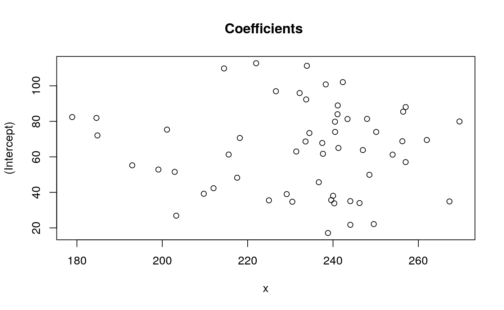
Linear mixed model fit by REML ['lmerMod']
Formula: y ~ x + (1 | subjects) + (0 + x | subjects)
REML criterion at convergence: 5618.902
Random effects:
Groups Name Std.Dev.
subjects (Intercept) 22.28
subjects.1 x 29.73
Residual 29.98
Number of obs: 560, groups: subjects, 56
Fixed Effects:
(Intercept) x
229.48 60.77 Bayesian analysis using JAGS of a random-coefficients model without correlation between intercept and slope
# Define model
cat("model {
# Priors
mu_int~dnorm(0, 0.001) # Mean hyperparameter for random intercepts
sigma_int~dunif(0, 100) # SD hyperparameter for random intercepts
tau_int <- 1/(sigma_int*sigma_int)
mu_slope~dnorm(0, 0.001) # Mean hyperparameter for random slopes
sigma_slope~dunif(0, 100) # SD hyperparameter for slopes
tau_slope <- 1/(sigma_slope*sigma_slope)
for (i in 1:n_subj) {
alpha[i]~dnorm(mu_int, tau_int) # Random intercepts
beta[i]~dnorm(mu_slope, tau_slope) # Random slopes
}
sigma_res~dunif(0, 100) # Residual standard deviation
tau_res <- 1/(sigma_res*sigma_res) # Residual precision
# Likelihood
for (i in 1:n_obs) {
mu[i] <- alpha[subjects[i]]+beta[subjects[i]]*x[i]
y[i]~dnorm(mu[i], tau_res)
}
}",
fill = TRUE, file = "lme_model2.txt")
# Bundle data
jags_data <- list(y = as.numeric(y), subjects = as.numeric(subjects), x = as.numeric(x),
n_subj = max(as.numeric(subjects)), n_obs = as.numeric(n_obs))
# Inits function
inits <- function() {
list(alpha = rnorm(n_subjects, 0, 2), beta = rnorm(n_subjects, 10, 2), mu_int = rnorm(1,
0, 1), sigma_int = rlnorm(1), mu_slope = rnorm(1, 0, 1), sigma_slope = rlnorm(1),
sigma_res = rlnorm(1))
}
# Parameters to estimate
params <- c("alpha", "beta", "mu_int", "sigma_int", "mu_slope", "sigma_slope",
"sigma_res")
# MCMC settings
ni <- 11000
nb <- 1000
nt <- 10
nc <- 3
# Start Gibbs sampling
library("R2jags")
outj <- jags(jags_data, inits = inits, parameters.to.save = params, model.file = "lme_model2.txt",
n.thin = nt, n.chains = nc, n.burnin = nb, n.iter = ni)Compiling model graph
Resolving undeclared variables
Allocating nodes
Graph information:
Observed stochastic nodes: 560
Unobserved stochastic nodes: 117
Total graph size: 2929
Initializing modelout <- outj$BUGSoutput
# Compare with MLEs and true values
data.frame(intercept_mean = intercept_mean, slope_mean = slope_mean, intercept_sd = intercept_sd,
slope_sd = slope_sd, sigma_res = sigma_res) intercept_mean slope_mean intercept_sd slope_sd sigma_res
1 230 60 20 30 30$alpha
[1] 238.8 243.9 212.7 261.3 196.1 236.0 239.4 231.6 190.5 248.7 227.9
[12] 222.6 236.9 156.2 205.1 236.8 234.1 247.6 236.2 274.1 245.4 235.2
[23] 245.1 206.2 228.4 226.1 246.4 225.5 227.9 214.0 230.1 225.3 233.3
[34] 229.7 224.6 227.9 244.9 190.5 198.2 237.0 235.9 222.5 239.4 231.9
[45] 229.7 242.7 188.1 249.6 235.7 259.8 219.1 265.2 223.2 223.4 226.7
[56] 215.2
$beta
[1] 24.93 36.89 55.00 59.59 73.75 60.27 66.98 105.39 26.71 45.45
[11] 12.29 101.62 65.73 42.44 39.24 61.03 53.19 109.25 116.57 49.81
[21] 81.00 29.94 53.25 20.97 68.64 37.36 57.81 76.09 58.10 93.17
[31] 57.31 43.06 53.33 61.11 113.58 98.66 -12.21 55.05 49.00 123.80
[41] 39.08 45.82 46.44 38.98 81.93 39.56 87.84 90.24 82.21 86.50
[51] 27.51 77.36 44.84 46.58 38.26 96.24
$deviance
[1] 5400
$mu_int
[1] 226.8
$mu_slope
[1] 59.63
$sigma_int
[1] 22.99
$sigma_res
[1] 30.1
$sigma_slope
[1] 30.38Linear mixed model fit by REML ['lmerMod']
Formula: y ~ x + (1 | subjects) + (0 + x | subjects)
REML criterion at convergence: 5618.902
Random effects:
Groups Name Std.Dev.
subjects (Intercept) 22.28
subjects.1 x 29.73
Residual 29.98
Number of obs: 560, groups: subjects, 56
Fixed Effects:
(Intercept) x
229.48 60.77 Using simulated data and successfully recovering the input values makes us fairly confident that the JAGS analysis has been correctly specified. This is very helpful for more complex models b/c it’s easy to make mistakes. A good way to check the JAGS analysis for a custom model that is needed for a particular phenomenon is to simulate the data and run the JAGS model on that data
The random-coefficients model with correlation between intercept and slope
n_subjects <- 56
n_sample <- 10
n_obs <- n_subjects * n_sample
subjects <- gl(n = n_subjects, k = n_sample)
# Standardized continuous covariate:
original_x <- runif(n_obs, 45, 70)
(mean_orig_x <- mean(original_x))[1] 56.56022sd_orig_x <- sd(original_x)
x <- (original_x - mean_orig_x)/sd_orig_x
hist(x, col = "lightsteelblue1", border = "white", breaks = 20, freq = FALSE)
lines(density(x), col = "lightsteelblue3", lwd = 2)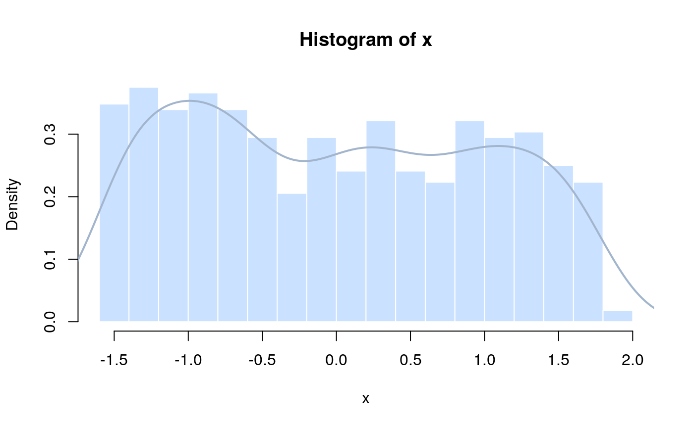
# Design matrix:
Xmat <- model.matrix(~subjects * x - 1 - x)
# Generate the correlated random effects for intercept and slope: Assembling
# the parameters for the multivariate normal distribution
intercept_mean <- 230 # Values for five hyperparameters
intercept_sd <- 20
slope_mean <- 60
slope_sd <- 30
intercept_slope_covariance <- 10
intercept_slope_correlation <- intercept_slope_covariance/(intercept_sd * slope_sd)
mu_vector <- c(intercept_mean, slope_mean)
var_covar_matrix <- matrix(c(intercept_sd^2, intercept_slope_covariance, intercept_slope_covariance,
slope_sd^2), 2, 2)
# Generating the correlated random effects for intercepts and slopes:
library("MASS") # Load MASS to sample from a multivariate normal
effects <- mvrnorm(n = n_subjects, mu = mu_vector, Sigma = var_covar_matrix)
## round(effects, 2)
par(mfrow = c(1, 2))
hist(effects[, 1], col = "lightsteelblue1", border = "white", breaks = 10, freq = FALSE)
lines(density(effects[, 1]), col = "lightsteelblue3", lwd = 2)
hist(effects[, 2], col = "lightsteelblue1", border = "white", breaks = 10, freq = FALSE)
lines(density(effects[, 2]), col = "lightsteelblue3", lwd = 2)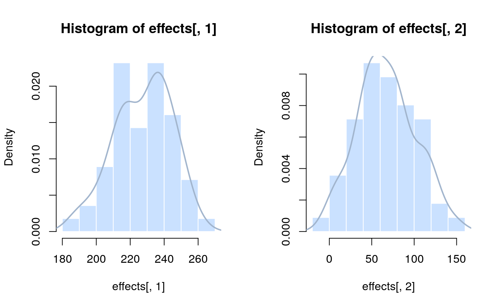
par(mfrow = c(1, 1))
# Plotting the bivariate distribution:
effects_kde <- kde2d(effects[, 1], effects[, 2], n = 50) # kernel density estimate
par(mfrow = c(1, 3))
contour(effects_kde)
image(effects_kde)
persp(effects_kde, phi = 45, theta = 30)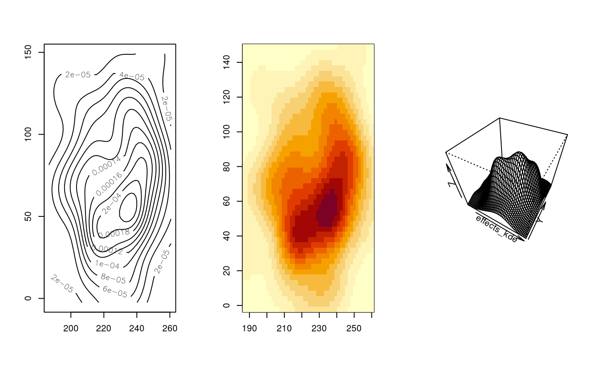
# even better:
par(mfrow = c(1, 2))
image(effects_kde)
contour(effects_kde, add = T)
persp(effects_kde, phi = 45, theta = -30, shade = 0.1, border = NULL, col = "lightsteelblue1",
ticktype = "detailed", xlab = "", ylab = "", zlab = "")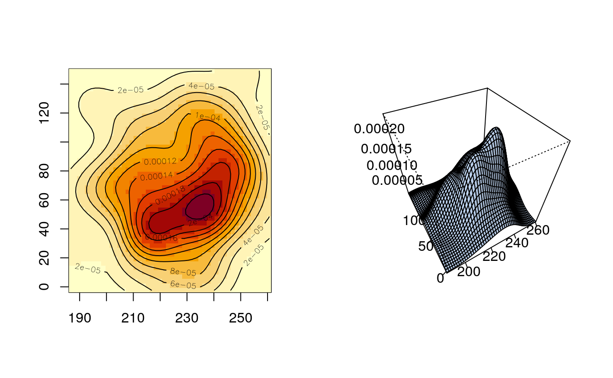
[1] 227.42785 67.18587[1] 16.77932 33.93159[1] 281.5456 1151.3530[1] 81.98091 [,1] [,2]
[1,] 281.54561 81.98091
[2,] 81.98091 1151.35301# Population parameters
data.frame(intercept_mean = intercept_mean, slope_mean = slope_mean, intercept_sd = intercept_sd,
slope_sd = slope_sd, intercept_slope_covariance = intercept_slope_covariance,
sigma_res = sigma_res) intercept_mean slope_mean intercept_sd slope_sd
1 230 60 20 30
intercept_slope_covariance sigma_res
1 10 30# Sampling error for intercept-slope covariance (200 samples of 50, 500,
# 5000 and 50000 group/random effects each) -- just to illustrate how
# difficult it is to estimate measures of association, even from fairly
# large data sets with 5000 observations:
par(mfrow = c(1, 4))
cov_temp1 <- numeric()
for (i in 1:200) {
temp1 <- mvrnorm(50, mu = mu_vector, Sigma = var_covar_matrix)
cov_temp1[i] <- var(temp1)[1, 2]
}
hist(cov_temp1, col = "lightsteelblue1", border = "white", freq = FALSE, main = "n_obs=50")
lines(density(cov_temp1), col = "lightsteelblue3", lwd = 2)
cov_temp2 <- numeric()
for (i in 1:200) {
temp2 <- mvrnorm(500, mu = mu_vector, Sigma = var_covar_matrix)
cov_temp2[i] <- var(temp2)[1, 2]
}
hist(cov_temp2, col = "lightsteelblue1", border = "white", freq = FALSE, main = "n_obs=500")
lines(density(cov_temp2), col = "lightsteelblue3", lwd = 2)
cov_temp3 <- numeric()
for (i in 1:200) {
temp3 <- mvrnorm(5000, mu = mu_vector, Sigma = var_covar_matrix)
cov_temp3[i] <- var(temp3)[1, 2]
}
hist(cov_temp3, col = "lightsteelblue1", border = "white", freq = FALSE, main = "n_obs=5000")
lines(density(cov_temp3), col = "lightsteelblue3", lwd = 2)
cov_temp4 <- numeric()
for (i in 1:200) {
temp4 <- mvrnorm(50000, mu = mu_vector, Sigma = var_covar_matrix)
cov_temp4[i] <- var(temp4)[1, 2]
}
hist(cov_temp4, col = "lightsteelblue1", border = "white", freq = FALSE, main = "n_obs=50000")
lines(density(cov_temp4), col = "lightsteelblue3", lwd = 2)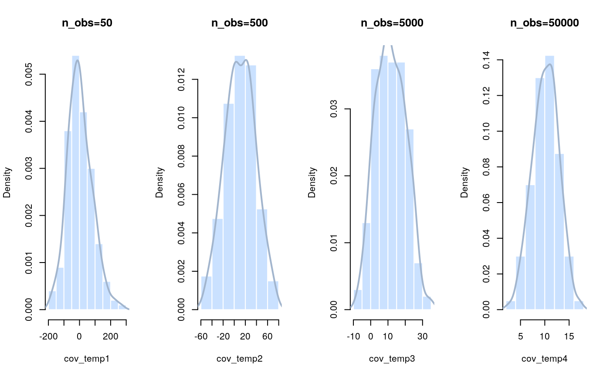
par(mfrow = c(1, 1))
intercept_effects <- effects[, 1]
## round(intercept_effects, 2)
slope_effects <- effects[, 2]
## round(slope_effects, 2)
all_effects <- c(intercept_effects, slope_effects) # Put them all together
## round(all_effects, 2)
# Generate the response variable: -- the deterministic part
lin_pred <- Xmat %*% all_effects
## round(as.vector(lin_pred), 2)
# -- the stochastic part
sigma_res <- 30
normal_error <- rnorm(n = n_obs, mean = 0, sd = sigma_res) # residuals
# -- add them together
y <- lin_pred + normal_error
# or, in one go:
y <- rnorm(n = n_obs, mean = lin_pred, sd = sigma_res)
hist(y, col = "lightsteelblue1", border = "white", breaks = 15, freq = FALSE)
lines(density(y), col = "lightsteelblue3", lwd = 2)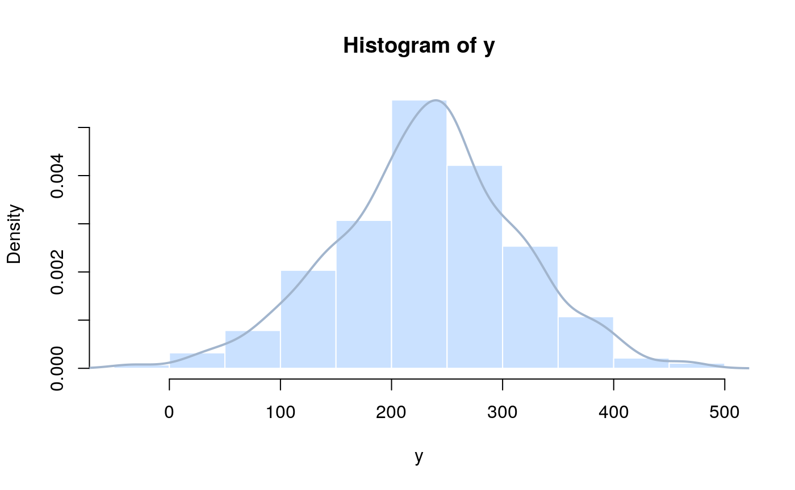
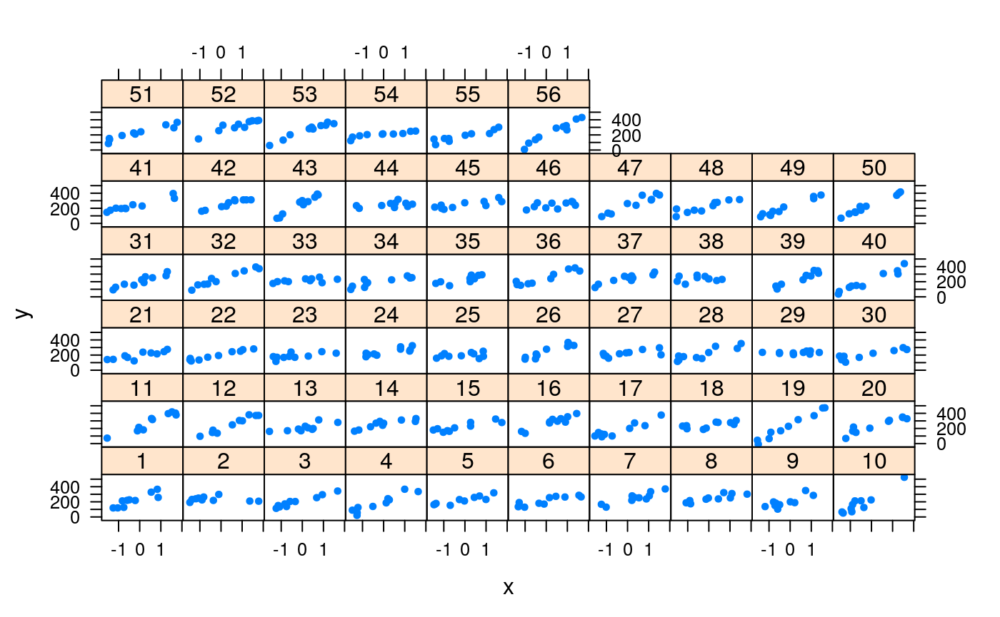
REML analysis using R
Linear mixed model fit by REML ['lmerMod']
Formula: y ~ x + (x | subjects)
REML criterion at convergence: 5623.412
Random effects:
Groups Name Std.Dev. Corr
subjects (Intercept) 16.13
x 35.84 0.20
Residual 30.44
Number of obs: 560, groups: subjects, 56
Fixed Effects:
(Intercept) x
227.34 66.91 # Compare with the true values:
data.frame(intercept_mean = intercept_mean, slope_mean = slope_mean, intercept_sd = intercept_sd,
slope_sd = slope_sd, intercept_slope_correlation = intercept_slope_covariance/(intercept_sd *
slope_sd), sigma_res = sigma_res) intercept_mean slope_mean intercept_sd slope_sd
1 230 60 20 30
intercept_slope_correlation sigma_res
1 0.01666667 30Bayesian analysis using JAGS
This is one way in which we can specify a Bayesian analysis of the random-coefficients model with correlation. It is more intuitive but does not generalize well to more than 2 correlated random effects. We will introduce a different and more general way to allow for correlation among two or more sets of random effects in a model after this.
# Define model
cat("model {
# Priors
mu_int~dnorm(0, 0.0001) # mean for random intercepts
mu_slope~dnorm(0, 0.0001) # mean for random slopes
sigma_int~dunif(0, 100) # SD of intercepts
sigma_slope~dunif(0, 100) # SD of slopes
rho~dunif(-1, 1) # correlation between intercepts and slopes
Sigma_B[1, 1] <- pow(sigma_int, 2) # We start assembling the var-covar matrix for the random effects
Sigma_B[2, 2] <- pow(sigma_slope, 2)
Sigma_B[1, 2] <- rho*sigma_int*sigma_slope
Sigma_B[2, 1] <- Sigma_B[1, 2]
covariance <- Sigma_B[1, 2]
Tau_B[1:2, 1:2] <- inverse(Sigma_B[,])
for (i in 1:n_subj) {
B_hat[i, 1] <- mu_int
B_hat[i, 2] <- mu_slope
B[i, 1:2]~dmnorm(B_hat[i, ], Tau_B[,]) # the pairs of correlated random effects
alpha[i] <- B[i, 1] # random intercept
beta[i] <- B[i, 2] # random slope
}
sigma_res~dunif(0, 100) # Residual standard deviation
tau_res <- 1/(sigma_res*sigma_res)
# Likelihood
for (i in 1:n_obs) {
mu[i] <- alpha[subjects[i]]+beta[subjects[i]]*x[i]
y[i]~dnorm(mu[i], tau_res)
}
}",
fill = TRUE, file = "lme_model3.txt")
# Bundle data
jags_data <- list(y = as.numeric(y), subjects = as.numeric(subjects), x = as.numeric(x),
n_subj = max(as.numeric(subjects)), n_obs = as.numeric(n_obs))
# Inits function
inits <- function() {
list(mu_int = rnorm(1, 0, 1), sigma_int = rlnorm(1), mu_slope = rnorm(1,
0, 1), sigma_slope = rlnorm(1), rho = runif(1, -1, 1), sigma_res = rlnorm(1))
}
# Parameters to estimate
params <- c("alpha", "beta", "mu_int", "sigma_int", "mu_slope", "sigma_slope",
"rho", "covariance", "sigma_res")
# MCMC settings
ni <- 3200
nb <- 200
nt <- 6
nc <- 3 # more than this probably needed for a good approx. of the posterior distribution
# Start Gibbs sampler
library("R2jags")
outj <- jags(jags_data, inits = inits, parameters.to.save = params, model.file = "lme_model3.txt",
n.thin = nt, n.chains = nc, n.burnin = nb, n.iter = ni)Compiling model graph
Resolving undeclared variables
Allocating nodes
Graph information:
Observed stochastic nodes: 560
Unobserved stochastic nodes: 62
Total graph size: 3045
Initializing model# traceplot(outj)
# -- this type of model does not converge very fast in addition to the fact
# that it does not generalize very well; we increase the number of
# iterations
ni <- 25000
nb <- 5000
nt <- 40
nc <- 3
outj <- jags(jags_data, inits = inits, parameters.to.save = params, model.file = "lme_model3.txt",
n.thin = nt, n.chains = nc, n.burnin = nb, n.iter = ni)Compiling model graph
Resolving undeclared variables
Allocating nodes
Graph information:
Observed stochastic nodes: 560
Unobserved stochastic nodes: 62
Total graph size: 3045
Initializing model# traceplot(outj)
# print(outj, dig = 3)
out <- outj$BUGSoutput
# Compare with MLEs and true values
data.frame(intercept_mean = intercept_mean, slope_mean = slope_mean, intercept_sd = intercept_sd,
slope_sd = slope_sd, intercept_slope_correlation = intercept_slope_covariance/(intercept_sd *
slope_sd), sigma_res = sigma_res) intercept_mean slope_mean intercept_sd slope_sd
1 230 60 20 30
intercept_slope_correlation sigma_res
1 0.01666667 30$alpha
[1] 241.2 229.9 222.2 210.9 226.8 215.9 226.7 235.4 218.6 249.7 226.3
[12] 208.6 210.6 248.6 227.7 248.8 216.9 238.6 237.5 224.5 206.4 212.8
[23] 205.7 232.5 206.1 237.8 223.7 231.9 226.9 217.8 212.1 236.0 217.4
[34] 212.0 230.1 249.2 238.2 236.1 207.7 225.1 245.9 230.6 255.6 235.6
[45] 242.0 228.8 229.1 229.8 228.8 243.0 229.8 247.9 232.7 211.8 198.8
[56] 207.2
$beta
[1] 90.136 -1.942 73.322 100.092 48.294 48.478 69.448 46.859
[9] 80.642 140.795 107.413 100.922 44.346 50.389 47.578 93.179
[17] 81.650 33.825 138.515 80.039 45.557 53.151 31.125 47.575
[25] 16.620 85.760 28.139 63.764 10.740 43.387 78.131 87.679
[33] 18.507 47.810 52.994 72.816 60.297 9.777 92.375 105.141
[41] 62.877 73.779 148.255 22.881 35.018 32.572 102.500 68.082
[49] 98.681 113.603 67.028 84.408 96.501 31.837 57.003 128.769
$covariance
[1] 117.9
$deviance
[1] 5418
$mu_int
[1] 227.2
$mu_slope
[1] 66.59
$rho
[1] 0.1895
$sigma_int
[1] 16.65
$sigma_res
[1] 30.58
$sigma_slope
[1] 37Linear mixed model fit by REML ['lmerMod']
Formula: y ~ x + (x | subjects)
REML criterion at convergence: 5623.412
Random effects:
Groups Name Std.Dev. Corr
subjects (Intercept) 16.13
x 35.84 0.20
Residual 30.44
Number of obs: 560, groups: subjects, 56
Fixed Effects:
(Intercept) x
227.34 66.91 # Note the very large SD for the posterior distribution of the covariance
# (relative to the mean):
print(out$mean$covariance, dig = 2)[1] 118[1] 106[1] 0.19[1] 0.16R does not even provide an SE for the covariance estimator (equivalently, for the correlation of random effects). Covariances are even harder to reliably estimate than variances, which are harder than mean estimators (it’s easy to estimate measures of center / location, harder to estimate measures of dispersion and even harder to estimate measures of association)
MODELING CORRELATED RANEFS WITH A SCALED INVERSE WISHART: the 2 correlated ranefs case first.
We will now introduce an alternative way of placing priors over correlated random effects that both converges faster and generalizes to structures with more than 2 correlated random effects. See the relevant chapter of Gelman & Hill (2007) for more introductory discussion and references
Bayesian analysis using a scaled Inverse Wishart
# Define model
cat("model {
# Set up the means for the multivariate ranef distribution
for (i in 1:2) {
xi[i]~dunif(0, 100) # scaling for the multivariate ranef distribution (for means, sds, and the ranefs themselves)
mu_raw[i]~dnorm(0, .0001) # unscaled means for the multivariate ranef distribution
mu[i] <- xi[i]*mu_raw[i] # scaled means for the multivariate ranef distribution
}
mu_int <- mu[1] # mean for random intercepts
mu_slope <- mu[2] # mean for random slopes
# Set up the var-covar matrix for the multivariate ranef distribution
Tau_B_raw[1:2, 1:2] ~ dwish(W[,], 3) # W is the identity matrix, provided as data; we have 3 dofs, i.e., 2 ranefs + 1, to ensure a uniform (-1, 1) prior for the correlation between ranefs
Sigma_B_raw[1:2, 1:2] <- inverse(Tau_B_raw[,])
for (i in 1:2) {
sigma[i] <- xi[i]*sqrt(Sigma_B_raw[i, i])
}
sigma_int <- sigma[1] # SD of intercepts
sigma_slope <- sigma[2] # SD of slopes
for (i in 1:2) { for (j in 1:2) {
rho[i, j] <- Sigma_B_raw[i, j]/sqrt(Sigma_B_raw[i, i]*Sigma_B_raw[j, j])
} }
rho_int_slope <- rho[1, 2]
covariance <- rho_int_slope*sigma_int*sigma_slope
# The multivariate ranef distribution, i.e., modeling the correlated ranefs
for (j in 1:n_subj) {
\tB_raw_hat[j, 1] <- mu_raw[1]
\tB_raw_hat[j, 2] <- mu_raw[2]
\tB_raw[j, 1:2] ~ dmnorm(B_raw_hat[j, ], Tau_B_raw[, ]) # the pairs of unscaled (raw) correlated random effects
\talpha[j] <- xi[1]*B_raw[j, 1] # random intercept
beta[j] <- xi[2]*B_raw[j, 2] # random slope
}
# Model the resid. sd independently
sigma_res~dunif(0, 100) # Residual standard deviation
tau_res <- 1/(sigma_res*sigma_res)
# Likelihood
for (i in 1:n_obs) {
mu_obs[i] <- alpha[subjects[i]]+beta[subjects[i]]*x[i]
y[i]~dnorm(mu_obs[i], tau_res)
}
# Sampling from the prior: given that we do not place hyperpriors directly on the means, sds and correlation(s) of the multivariate ranef distribution, we want to sample from the prior to make sure we didn't accidentally make it more informed than we wanted (and we want it very vague)
for (i in 1:2) {
xi_prior[i]~dunif(0, 100)
mu_raw_prior[i]~dnorm(0, .0001)
mu_prior[i] <- xi_prior[i]*mu_raw_prior[i]
}
mu_int_prior <- mu_prior[1]
mu_slope_prior <- mu_prior[2]
Tau_B_raw_prior[1:2, 1:2] ~ dwish(W[,], 3)
Sigma_B_raw_prior[1:2, 1:2] <- inverse(Tau_B_raw_prior[,])
for (i in 1:2) {
sigma_prior[i] <- xi_prior[i]*sqrt(Sigma_B_raw_prior[i, i])
}
sigma_int_prior <- sigma_prior[1]
sigma_slope_prior <- sigma_prior[2]
for (i in 1:2) { for (j in 1:2) {
rho_prior[i, j] <- Sigma_B_raw_prior[i, j]/sqrt(Sigma_B_raw_prior[i, i]*Sigma_B_raw_prior[j, j])
} }
rho_int_slope_prior <- rho_prior[1, 2]
}",
fill = TRUE, file = "lme_model4.txt")
# Bundle data
jags_data <- list(y = as.numeric(y), subjects = as.numeric(subjects), x = as.numeric(x),
n_subj = max(as.numeric(subjects)), n_obs = as.numeric(n_obs), W = diag(2))
# install.packages('bayesm')
library("bayesm")
var_vec <- apply(coef(lme_fit3)$subjects, 2, var)
# Inits function
inits <- function() {
list(xi = rlnorm(2), mu_raw = rnorm(2), Tau_B_raw = rwishart(3, diag(2) *
var_vec)$W, sigma_res = rlnorm(1), xi_prior = rlnorm(2), mu_raw_prior = rnorm(2),
Tau_B_raw_prior = rwishart(3, diag(2) * var_vec)$W)
}
# Parameters to estimate
params <- c("mu", "mu_int", "mu_slope", "sigma", "sigma_int", "sigma_slope",
"rho", "rho_int_slope", "covariance", "alpha", "beta", "sigma_res", "mu_int_prior",
"mu_slope_prior", "sigma_int_prior", "sigma_slope_prior", "rho_int_slope_prior")
# MCMC settings
ni <- 7000
nb <- 1000
nt <- 6
nc <- 3 # more than this probably needed for a good approx. of the posterior distribution
# Start Gibbs sampler
library("R2jags")
outj <- jags(jags_data, inits = inits, parameters.to.save = params, model.file = "lme_model4.txt",
n.thin = nt, n.chains = nc, n.burnin = nb, n.iter = ni)Compiling model graph
Resolving undeclared variables
Allocating nodes
Graph information:
Observed stochastic nodes: 560
Unobserved stochastic nodes: 67
Total graph size: 3208
Initializing modelout <- outj$BUGSoutput
# Compare with MLEs and true values
data.frame(intercept_mean = intercept_mean, slope_mean = slope_mean, intercept_sd = intercept_sd,
slope_sd = slope_sd, intercept_slope_correlation = intercept_slope_covariance/(intercept_sd *
slope_sd), sigma_res = sigma_res) intercept_mean slope_mean intercept_sd slope_sd
1 230 60 20 30
intercept_slope_correlation sigma_res
1 0.01666667 30$alpha
[1] 236.9 229.2 224.9 217.6 227.5 220.3 227.4 232.8 222.2 241.8 227.3
[12] 216.5 217.1 241.1 228.0 241.6 221.3 234.8 234.6 226.1 214.0 218.6
[23] 214.2 230.8 214.2 234.5 225.4 230.5 227.4 221.6 218.0 233.6 221.4
[34] 218.1 229.6 241.5 234.8 233.6 215.8 226.3 239.5 230.0 246.4 233.2
[45] 236.9 228.5 229.3 229.3 228.7 237.8 229.6 240.8 231.6 217.4 209.6
[56] 215.0
$beta
[1] 59.916 -1.062 48.597 66.781 31.965 32.319 46.089 31.344 53.003 93.081
[11] 71.368 66.885 29.327 33.849 31.702 62.291 54.219 22.366 92.009 52.940
[21] 30.166 35.145 21.261 32.080 11.397 56.996 18.593 42.350 7.529 28.936
[31] 51.466 58.459 12.565 32.024 35.350 48.354 40.259 6.597 60.820 70.124
[41] 41.987 49.082 98.104 15.720 23.587 22.269 68.036 45.266 65.522 75.537
[51] 44.616 56.612 64.249 21.236 38.249 84.889
$covariance
[1] 76.92
$deviance
[1] 5793
$mu
[1] 227.7 44.4
$mu_int
[1] 227.7
$mu_int_prior
[1] -96.53
$mu_slope
[1] 44.4
$mu_slope_prior
[1] -136.9
$rho
[,1] [,2]
[1,] 1.0000 0.1807
[2,] 0.1807 1.0000
$rho_int_slope
[1] 0.1807
$rho_int_slope_prior
[1] 0.01562
$sigma
[1] 10.61 23.60
$sigma_int
[1] 10.61
$sigma_int_prior
[1] 59.83
$sigma_res
[1] 48.1
$sigma_slope
[1] 23.6
$sigma_slope_prior
[1] 62.51Linear mixed model fit by REML ['lmerMod']
Formula: y ~ x + (x | subjects)
REML criterion at convergence: 5623.412
Random effects:
Groups Name Std.Dev. Corr
subjects (Intercept) 16.13
x 35.84 0.20
Residual 30.44
Number of obs: 560, groups: subjects, 56
Fixed Effects:
(Intercept) x
227.34 66.91 # Once again, note the very large SD for the posterior distribution of the
# covariance (relative to the mean):
print(out$mean$covariance, dig = 2)[1] 77[1] 97 [,1] [,2]
[1,] 1.00 0.18
[2,] 0.18 1.00 [,1] [,2]
[1,] 0.00 0.36
[2,] 0.36 0.00# Finally, we compare the prior and posterior distributions for the
# (derived) ranef distribution parameters:
par(mfrow = c(3, 4))
hist(out$sims.list$mu_int_prior, col = "lightsteelblue1", border = "white",
breaks = 10, freq = FALSE, main = "mu_int_prior")
lines(density(out$sims.list$mu_int_prior), col = "lightsteelblue3", lwd = 2)
hist(out$sims.list$mu_int, col = "lightsteelblue1", border = "white", breaks = 10,
freq = FALSE, main = "mu_int")
lines(density(out$sims.list$mu_int), col = "lightsteelblue3", lwd = 2)
hist(out$sims.list$mu_slope_prior, col = "lightsteelblue1", border = "white",
breaks = 10, freq = FALSE, main = "mu_slope_prior")
lines(density(out$sims.list$mu_slope_prior), col = "lightsteelblue3", lwd = 2)
hist(out$sims.list$mu_slope, col = "lightsteelblue1", border = "white", breaks = 10,
freq = FALSE, main = "mu_slope")
lines(density(out$sims.list$mu_slope), col = "lightsteelblue3", lwd = 2)
hist(out$sims.list$sigma_int_prior, col = "lightsteelblue1", border = "white",
breaks = 10, freq = FALSE, main = "sigma_int_prior")
lines(density(out$sims.list$sigma_int_prior), col = "lightsteelblue3", lwd = 2)
hist(out$sims.list$sigma_int, col = "lightsteelblue1", border = "white", breaks = 10,
freq = FALSE, main = "sigma_int")
lines(density(out$sims.list$sigma_int), col = "lightsteelblue3", lwd = 2)
hist(out$sims.list$sigma_slope_prior, col = "lightsteelblue1", border = "white",
breaks = 10, freq = FALSE, main = "sigma_slope_prior")
lines(density(out$sims.list$sigma_slope_prior), col = "lightsteelblue3", lwd = 2)
hist(out$sims.list$sigma_slope, col = "lightsteelblue1", border = "white", breaks = 10,
freq = FALSE, main = "sigma_slope")
lines(density(out$sims.list$sigma_slope), col = "lightsteelblue3", lwd = 2)
hist(out$sims.list$rho_int_slope_prior, col = "lightsteelblue1", border = "white",
breaks = 10, freq = FALSE, main = "rho_int_slope_prior")
lines(density(out$sims.list$rho_int_slope_prior), col = "lightsteelblue3", lwd = 2)
hist(out$sims.list$rho_int_slope, col = "lightsteelblue1", border = "white",
breaks = 10, freq = FALSE, main = "rho_int_slope")
lines(density(out$sims.list$rho_int_slope), col = "lightsteelblue3", lwd = 2)
par(mfrow = c(1, 1))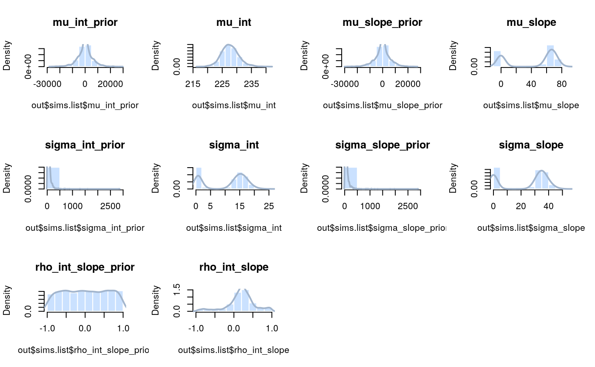